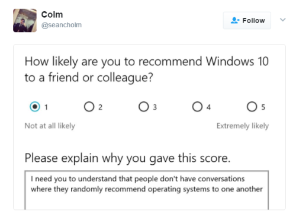
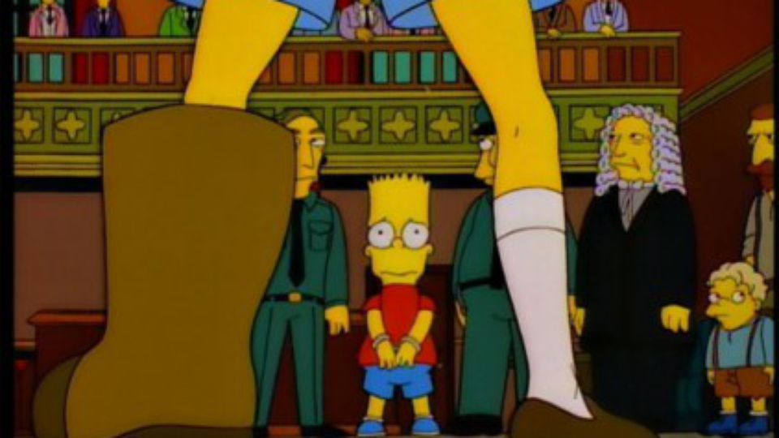
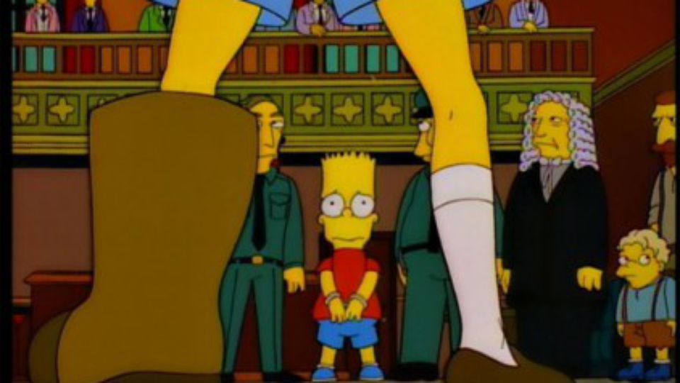

A Quick Chat with The BrownCardigan Himself...
A Quick Chat with The BrownCardigan Himself...
It’s no secret that everyone hates the Fat Jew. He’s been taking credit for other people’s jokes and running around with that stupid fucking haircut for far too long. Fortunately, the thieving, talentless turd-pie was busted recently, and now we can all breath easy knowing that he is gone and balance has been restored to the universe. Or has it? We hit up the LOL Lords at Brown Cardigan to find out what’s happening, why it’s happening, and what will happen next in the ephemeral and very arcane world of high memery.
The Fat Jew is a shameless pig and everybody hates him. To your mind, what are the most brazen offences he has committed?
Just this.
Given that any press is good press, is that genuinely loathsome bastard, the Fat Jew, going to be able to spin this and have some sort of convoluted come back?
He probably will; he’s already started crediting all of his sources, and people probably don’t give a shit that nothing is original anyway, so I don’t see anything changing, and who cares… He’s cooked himself and has been preparing for self-detonation for a minute now. He’ll be back to getting retarded shows and book deals and shit in no time… I don’t doubt it.
That despicable cock-sore FuckJerry has also come under fire for stealing stuff; what has he been up to, and are his days numbered also?
Definitely. Dude was so VERY quiet and ducking shots while FatJew was absorbing all the hatred. However, ya boy Elliot Tebele (FuckJerry) is far more sinister and low-key sus. He literally does the same thing as Fat Jew but on the DL. He’ll trawl through blogs with little reach, Reddit users with no gold, and Tweets with no following and recycle them all as his own content, screenshot that and bam, he got middle America and college student herbs and fanboys like, “HOW FUNNY IS FUCKJERRY, HE’S SO RELATABLE!” Smh. He wants to be a stand-up comedian with other people’s jokes. Goddamn I’d love to be at that show.
What’s the backstory on the beef you had with that vile little dickhead?
We exclusively started hating him when we called him out after we found a few pieces of our original content repurposed in his Instagram feed with zero credit; it wasn’t a big deal, but it kept happening so we waged some pretty sick meme beef, which is a RETARDED concept. Anyway, after the continuous deep burns, he went and took an old NBA Throwbacks gram account (one of many he has, it’s quite easy to create an account and tell your 5+ million followers to follow any account) with 50k followers already attained, he rebranded it as @BeigeCardigan, used that as his source account on @fuckjerry and proceeded to replicate our content, even with our logo. Then when the heat got hot after we posted this, he went and put the credit under his Wife’s name to boost her career as a fucking stylist. Some class-A butt hurt. He continues to say how salty we are about him stealing our whole shit. He’ll catch some fades soon.
If you could kick FuckJerry in the neck or balls, which would you choose?
Right in the dick.
How long would the run-up for that kick be?
No run up, just an extra big boot. U kno.
How would you feel if @FuckJerry married your sister?
Single white female him.
Fuckjerry is about as funny as cot death, but people still follow him. Are people stupid?
100% if you like basic memes from a basic cunt IRL, you deserve them wholeheartedly. If you want a taste of how boring the dude is, follow him on Snapchat, he’s about as hilarious as David Spade on a really good day, or maybe that movie TED.
When will the memes go away?
Hopefully soon, then we can all get on with our lives.
 
